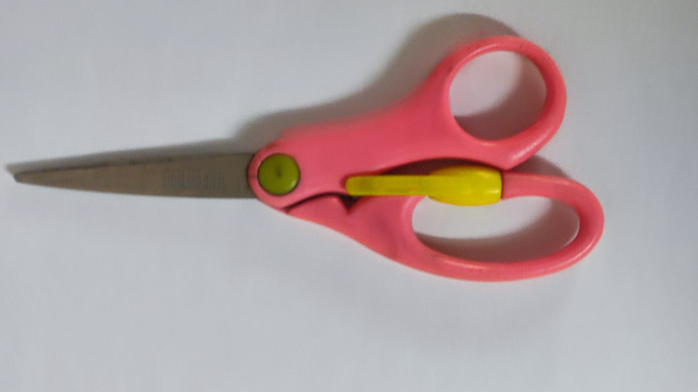

A
1. Test Image:
Output on Google Lens: Spoon
Output on Mobile Net: Spoon
Results: Both are accurate
A
2. Test Image:
Output on Google Lens:Phone
Output on Mobile Net:Phone
Results:Both are accurate
A
3. Test Image:

Output on Google Lens: Key
Output on Mobile Net: Key
Results: Both are accurate
A
4. Test Image:
Output on Google Lens: Pen
Output on Mobile Net: Pen
Results:Both are accurate
A
5. Test Image:
Output on Google Lens: Bowl
Output on Mobile Net: Plate
Results:Mobile Net is more accurate
A
6. Test Image:

Output on Google Lens: Scissors
Output on Mobile Net: Scissors
Results: Both are accurate
A
7. Test Image:
Output on Google Lens: Car
Output on Mobile Net: Car
Results:Both are accurate
A
8. Test Image:
Output on Google Lens: Pendrive
Output on Mobile Net: Pendrive
Results:Both are accurate
A
9. Test Image:
Output on Google Lens: Mouse
Output on Mobile Net: Mouse
Results:Both are accurate
A
10. Test Image:

Output on Google Lens: Cup
Output on Mobile Net: Bowl
Results: Google Lens is more accurate